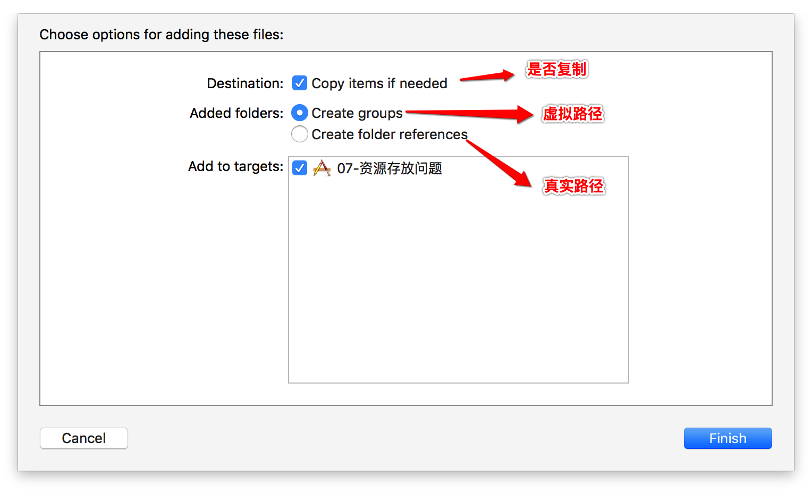

实现毛玻璃效果
- 做法:
-往 UIImageView 中添加 UIToolbara 即可 示例代码:
UIImageView *imageView = [[UIImageView alloc] init]; imageView.frame = self.view.bounds; imageView.image = [UIImage imageNamed:@"1"]; // 设置图片的内容模式 imageView.contentMode = UIViewContentModeScaleAspectFill; // 1.5 设置毛玻璃 UIToolbar *toolBar = [[UIToolbar alloc] init]; toolBar.frame = imageView.bounds; // 1.6 设置工具栏的样式 toolBar.barStyle = UIBarStyleBlack; // 1.7 设置透明度 toolBar.alpha = 0.98; [imageView addSubview:toolBar];
UILabel
常用属性
显示的文字 @property(nonatomic,copy) NSString *text; 字体 @property(nonatomic,retain) UIFont *font; 文字颜色 @property(nonatomic,retain) UIColor *textColor; 对齐模式（比如左对齐、居中对齐、右对齐） @property(nonatomic) NSTextAlignment textAlignment; 文字行数 @property(nonatomic) NSInteger numberOfLines; 换行模式 @property(nonatomic) NSLineBreakMode lineBreakMode;示例代码
UILabel *label = [[UILabel alloc] init]; label.frame = CGRectMake(50, 50, 200, 150); label.backgroundColor = [UIColor purpleColor]; // 设置文字 label.text = @"Hello World!Hello World!Hello World!Hello World!"; // 设置对齐方式 label.textAlignment = NSTextAlignmentCenter; // 设置文字的颜色 label.textColor = [UIColor yellowColor]; // 设置字体的大小 label.font = [UIFont systemFontOfSize:20]; label.font = [UIFont boldSystemFontOfSize:20]; label.font = [UIFont italicSystemFontOfSize:20]; // 设置行模式 label.lineBreakMode = NSLineBreakByTruncatingMiddle; // 1.9 自动换行 ---> 0自动换行 label.numberOfLines = 0; // 设置阴影 label.shadowColor = [UIColor redColor]; // 设置偏移量 label.shadowOffset = CGSizeMake(-2, 2);
UIImageView
常用属性
显示的图片 @property(nonatomic,retain) UIImage *image; 显示的动画图片 @property(nonatomic,copy) NSArray *animationImages; 动画图片的持续时间 @property(nonatomic) NSTimeInterval animationDuration; 动画的播放次数（默认是0，代表无限播放 @property(nonatomic) NSInteger animationRepeatCount; 图片的内容模式 @property(nonatomic) UIViewContentMode contentMode;contentMode 内容模式的值有:
带Scale单词: 表明图片有可能被拉伸或者压缩(变形)
UIViewContentModeScaleToFill,
特点： 将图片拉伸至填充整个imageView 图片显示的尺寸跟imageView的尺寸是一样的带有Aspect单词: 会等比例缩放图片(不会变形)
UIViewContentModeScaleAspectFit,
fit:自适应,特点：保证刚好能看到图片的全部UIViewContentModeScaleAspectFill,
fill:填充,特点：拉伸至图片的宽度或者高度跟imageView一样不带Scale单词: 表明图片不可能被拉伸或者压缩(变形) UIViewContentModeCenter,
UIViewContentModeTop,
UIViewContentModeBottom,
UIViewContentModeLeft,
UIViewContentModeRight,
UIViewContentModeTopLeft,
UIViewContentModeTopRight,
UIViewContentModeBottomLeft,
UIViewContentModeBottomRight
示例代码:
UIImageView *imageView = [[UIImageView alloc] init]; imageView.frame = CGRectMake(20, 50, 200, 150); imageView.backgroundColor = [UIColor redColor]; imageView.image = [UIImage imageNamed:@"1"]; // 设置图片的内容模式 imageView.contentMode = UIViewContentModeScaleAspectFill; // 裁剪超出的内容 imageView.clipsToBounds = YES; // 加入 [self.view addSubview:imageView];
- 常用方法
- (void)startAnimating; // 开始动画 - (void)stopAnimating; // 停止动画 - (BOOL)isAnimating; // 是否正在执行动画
UIImage
资源存放问题
图片的加载方式:
- 方式1:
imageNamed: - 方式2:
imageWithContentsOfFile:
- 方式1:
存放在
Assets.xcassets:- 1.在资源包中对应的是Assets.car
- 2.放到Assets.xcassets中的图片是无法获取到路径
- 3.只能通过imageNamed:这种方式来加载图片
- 4.不能通过imageWithContentsOfFile:这种方式来加载图片
放到
项目目录中:- 1.图片资源会被打包到MainBundle中
- 2.能够获取到图片的路径
- 3.能通过imageWithContentsOfFile:这种方式来加载图片
- 4.也能通过imageNamed:这种方式来加载图片
内存分析
imageNamed:- 加载图片,就算没有强指针指向,也不会从内存中被干掉 (默认带有缓存)
imageWithContentFile:- 加载图片,如果没有强指针指向,就会被从内存中被干掉 (默认不带有缓存)
放到Assets.xcassets中的图片默认就带有缓存
- 使用场景:
- imageNamed: 1)图片经常会被使用 2)少量的图片
- imageWithContentFile: 1)图片不经常被使用 2)大批量的图片
播放音效
- 头文件
<AVFoundation/AVFoundation.h> 示例代码
// 1.2 创建播放器 NSString *path = [[NSBundle mainBundle] pathForResource:@"mySong1.mp3" ofType:nil]; NSURL *url = [NSURL fileURLWithPath:path]; AVPlayerItem *playerItem = [[AVPlayerItem alloc] initWithURL:url]; self.player = [[AVPlayer alloc] initWithPlayerItem:playerItem]; // 1.3 播放 [self.player play];
资源拖放操作说明
- Copy items if needed:
勾上,复制资源到项目;不勾,添加的只是资源的链接 - Create group
若拖放的是一个文件夹,则会创建虚拟的文件夹,实际上使不存在的.默认,文件都是等级别的.文件夹颜色为黄色. - Create folder references
若拖放的是一个文件夹,则会创建真实的文件夹.文件夹颜色为蓝色.